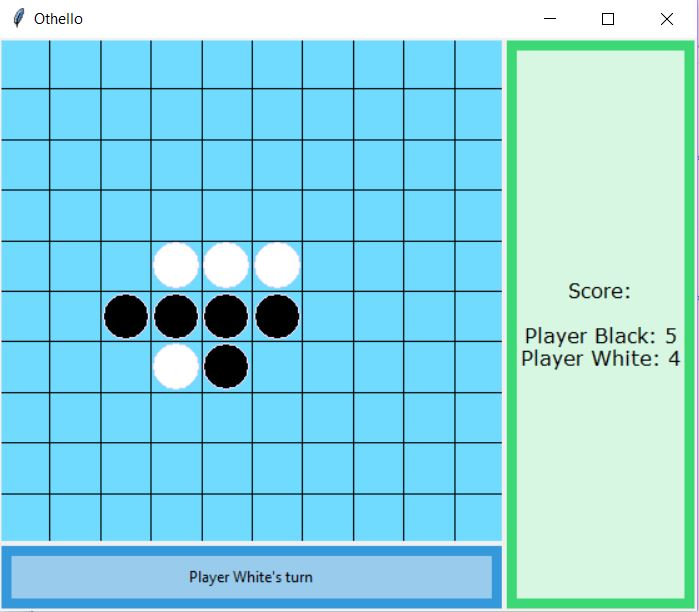
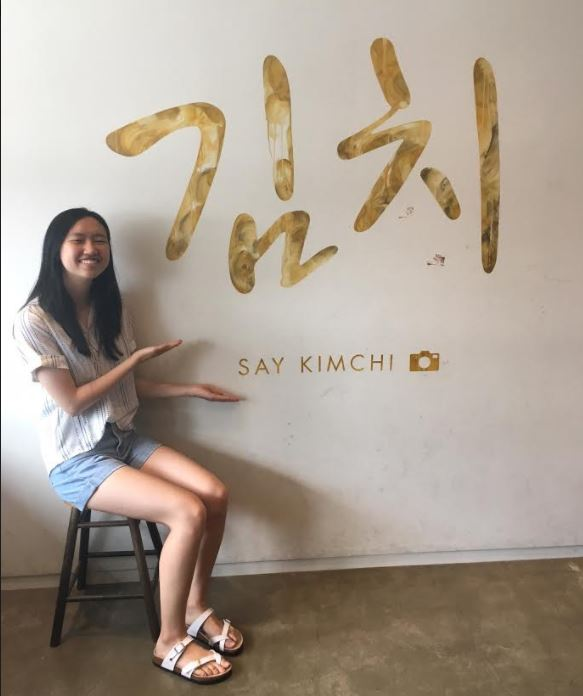
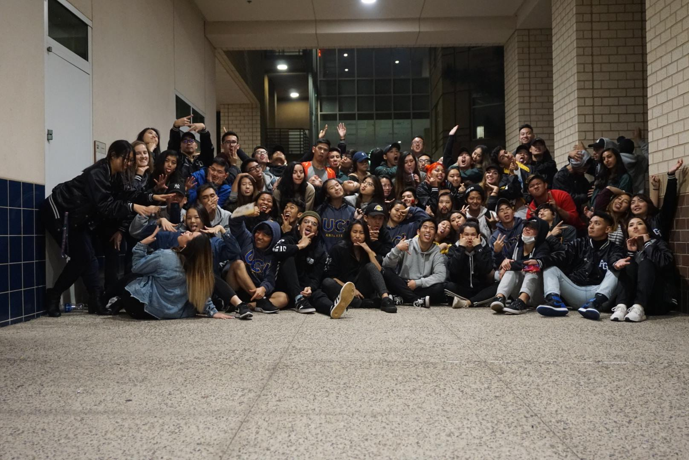
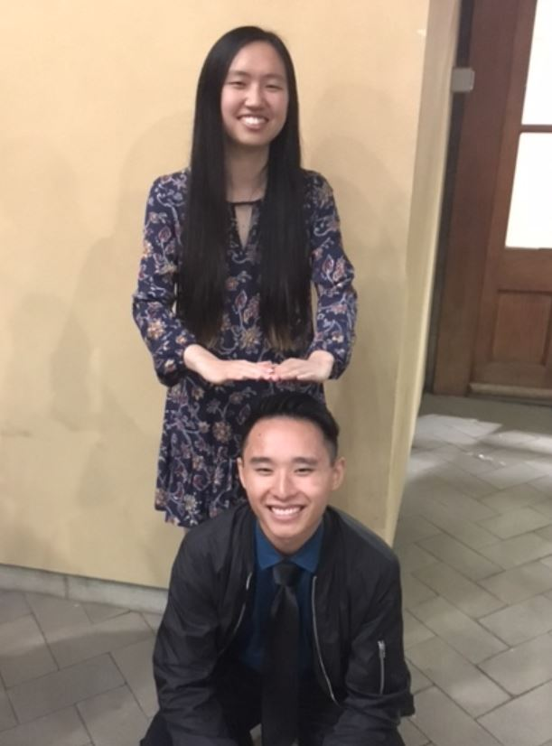
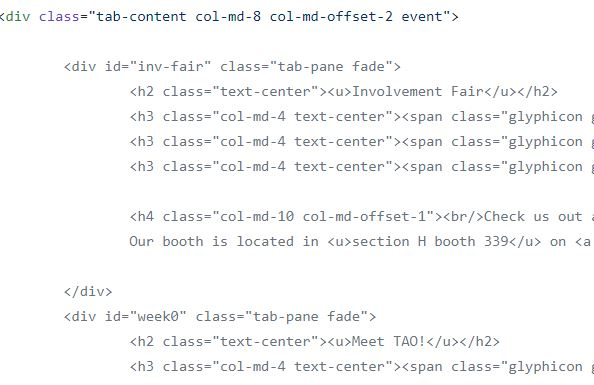
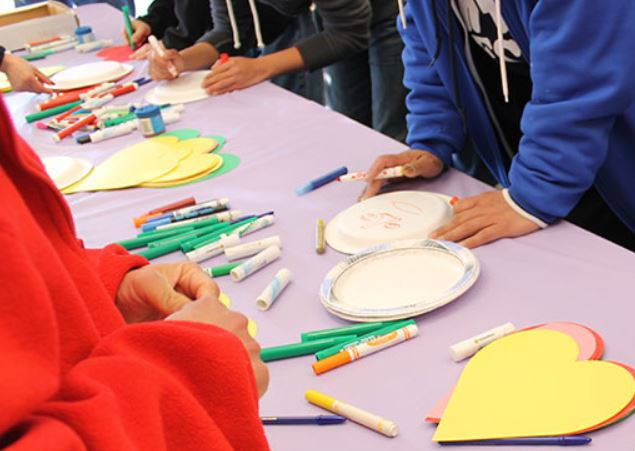
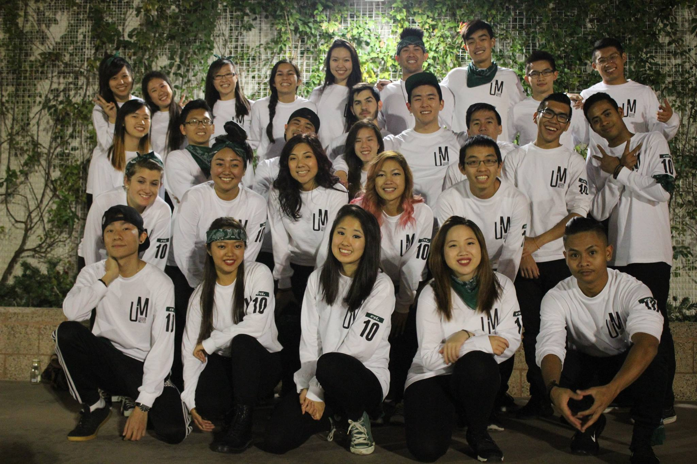

My Story
Growing up in my hometown, I was surrounded by
With further experiences working with those with
Growing up in my hometown, I was surrounded by
With further experiences working with those with
I assist with a special needs adult with daily tasks such as brushing his teeth, ensuring he takes his medications, and providing food.
I teach in different organizations such as On One Studios and Saturday Morns. My goals as a teacher is to provide a fun and welcoming environment for new dancers. Dancing has been my main hobby and is a way for me to push myself creatively, aiming to find unique ways in executing the musicality of a song.
I was able to reconnect with my passion for piano and previously took lessons growing up. Each week, I teach a few students and learned to tackle the challenges of teaching rhythm and technique through Zoom.
I hold many roles such as taking patient history, going over medication instructions and consent forms, assisting in laser procedures, taking images, and checking eye vitals. Additionally, I scribe for Dr. Kaur, help complete the patient note, and discuss the plan of care with patients.
I managed the data collection of the company's two businesses (Strength.com and EverydayMale.com)
and performed adhoc requests using a platform called TreasureData.
SQL queries and python workflows were used to clean and setup the data to export to Tableau.
Dashboards were built to analyze user activity via pageviews, key performance indicators (KPI)
such as customer lifetime value, social media growth, influencer marketing, and paid advertisements.
I also played a part in making website changes using Wordpress, CSS, HTML, and Git (source control).
I was selected as a reader/grader for a computational linear algebra class that I took two years prior. Through the job, I create homework solutions for the homework sets every other week and grade homework, labs (in MATLAB), and tests.
I worked on a system to store system data collected from the company's products when tests are ran on the system. Two different methods, a data structure of Linked Lists and databases with SQL, were used to store the information. The email alert system to send error reports was modified to send information from this data collection rather than immediately after testing.
I helped develop a data model prototype for large data analysis for the company's product by focusing on the front end of the web application and connecting the data from a Python script that populated a database. Using Flask for AJAX calls between the UI and Python script and Git for source code control, data was extracted and displayed as graphs. HTML, Javascript, CSS, c3.js, and selectize.js were used for the UI.
I learned how to do simple white box test automation for the Web UI of the company's product. It required Jasmine.js for creating test cases and XML to store the defined test cases. I built an understand of the client/server relationship and how to implement simple quality assurance measures.
To create this website, user research was gathered to find what users were looking for in a professional portfolio. User testing was done to identify enhancements and changes needed for the website.
I created and used a SQL database with a web application to constantly display and store data to and from the database. Tomcat helped provide the connection between the front end and back end. AJAX calls were used to quickly update. The web application allowed a user to search in an engine that had autocorrect features, and users can add to their cart and purchase movies.
The website features differing sections about the club with the use of Bootstrap, HTML, and CSS. It was my first exposure to front end design! Unfortunately, the website was not renewed, so it is not available anymore.
Through the use of the Python IDE and its graphical interface Tkinter, I learned to create/organize classes, use different libraries, and create a graphical user interface.

Helped distribute food to clients and provided interpreation services.
Helped with interpretation at a COVID-19 vaccination site.
Studied CLARITY and Arivis Vision 4D Software to analyze spinal cord samples.
Because I loved to help others, including fellow classmates in the past that struggled with difficult STEM courses, I wanted to take on a free tutoring position. The teaching and public speaking I had to do in front of hundreds of students was quite an amazing experience, and the students that reached out and thanked me made me realize how much of an impact I can make.
Hands-on experience in an occupational therapy-based clinic with special needs children and adults.
I had joined this team upon discovering their unique dance style and learned from many fellow dancers and invited dance teachers. We were able to film a video at the end of the season and plan to compete the coming season.
During the pandemic, I moved and had to relocate to a new dance team. On this team, we created dance videos and had many of our practices through Zoom. When the situation of the pandemic improved, we performed at an exhibition performance called Mainstay. I had the honor of creating choreography for the opening section of this performance.
Over the summer, I had the opportunity to study abroad in South Korea at one of the top three universities in the country. Overall, I learned a lot about the culture and opened my mind to a new environment that I was initially not as comfortable in. I learned to travel on my own and think quickly when new problems arise.

After being on an exhibition hip-hop team for my first 4 years of college, I wanted to challenge myself and audition for a competitive dance team. It has ignited my passion in the hobby of dancing and has further developed my skills in performing under pressure, adapting to a new group of individuals, finding new ways to challenge myself.
Because I stayed a 5th year in college to complete a dual degree, I wanted to help contribute to the next generation of members on my previous dance team. With all the opportunities given to me in leadership, friendship, and dance, I wanted to help guide and nurture the team to give them a positive experience.

Currently, I lead a team of hip-hop dancers with two other coordinators for an exhibition team at UCI. I have artistic say on the dance sets we do and make decisions for the team. Some noteable events that I am in charge of are auditions, performances, and team bonding events.
My role as a mentor is to be there as a friend and to give school and professional advice in my field/major. This is my second year being a mentor for the program. I currently have a mentee this year and still keep in contact with the two mentees I had last year.

My role as a captain was to help the coordinators make decisions and be the bridge between leadership and the team. As my first important leadership role in college, being a captain of the team helped me grow a lot as a leader. Now, I have become comfortable speaking aloud in front of a crowd and gained a lot of communication skills through working with the rest of leadership and interacting with members of the team.

As a Webmaster for TAO at UCI, I created a basic website which explained what the club was about, showed pictures of events, and displayed upcoming events. As a board member, I helped plan events and attend meetings for the club. More details of the website are listed in the "Projects" section.

I planned and taught arts and crafts to special needs children every other Saturday. Because I have a brother that has special needs, I wanted to give back to the special needs community and help them grow in their motor skills.

I auditioned as a freshmen in college and have been on the team since then. From being on the team, I built strong friendships and learned time management through balancing dance and school.
